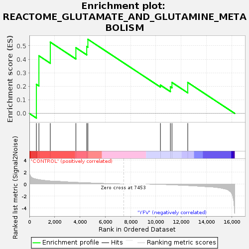
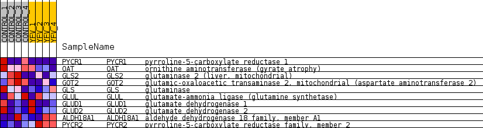
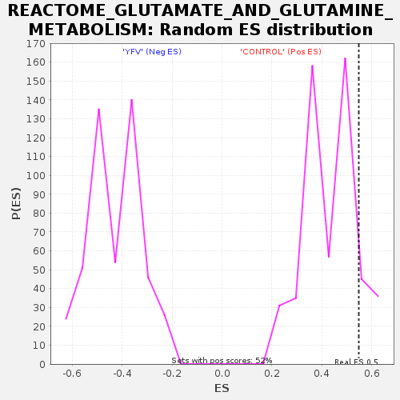

| Dataset | MATRIZ_GSE99081_collapsed_to_symbols.gsea_CLASE_99081.cls#CONTROL_versus_YFV |
| Phenotype | gsea_CLASE_99081.cls#CONTROL_versus_YFV |
| Upregulated in class | CONTROL |
| GeneSet | REACTOME_GLUTAMATE_AND_GLUTAMINE_METABOLISM |
| Enrichment Score (ES) | 0.5479082 |
| Normalized Enrichment Score (NES) | 1.2642889 |
| Nominal p-value | 0.103053436 |
| FDR q-value | 0.9410013 |
| FWER p-Value | 1.0 |

| SYMBOL | TITLE | RANK IN GENE LIST | RANK METRIC SCORE | RUNNING ES | CORE ENRICHMENT | |
|---|---|---|---|---|---|---|
| 1 | PYCR1 | pyrroline-5-carboxylate reductase 1 | 554 | 0.803 | 0.2153 | Yes |
| 2 | OAT | ornithine aminotransferase (gyrate atrophy) | 754 | 0.719 | 0.4262 | Yes |
| 3 | GLS2 | glutaminase 2 (liver, mitochondrial) | 1654 | 0.502 | 0.5268 | Yes |
| 4 | GOT2 | glutamic-oxaloacetic transaminase 2, mitochondrial (aspartate aminotransferase 2) | 3677 | 0.269 | 0.4858 | Yes |
| 5 | GLS | glutaminase | 4535 | 0.199 | 0.4948 | Yes |
| 6 | GLUL | glutamate-ammonia ligase (glutamine synthetase) | 4627 | 0.189 | 0.5479 | Yes |
| 7 | GLUD1 | glutamate dehydrogenase 1 | 10363 | -0.049 | 0.2097 | No |
| 8 | GLUD2 | glutamate dehydrogenase 2 | 11150 | -0.116 | 0.1972 | No |
| 9 | ALDH18A1 | aldehyde dehydrogenase 18 family, member A1 | 11275 | -0.127 | 0.2290 | No |
| 10 | PYCR2 | pyrroline-5-carboxylate reductase family, member 2 | 12523 | -0.247 | 0.2290 | No |

